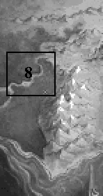
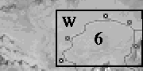
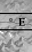
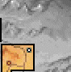
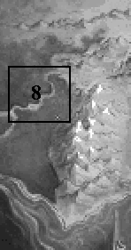
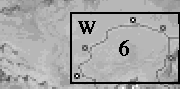
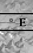
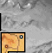

|  |  |  |  | ||||
| |||||||
|  |  |  |  | ||||
| |||||||
One by one he tended the wincing soldier's purple wounds, stitched, salved, bandaged, did what little he could in the leaping golden halo of firelight. Fortunately for his roadside patient, he could do more than most.Fingers slick with alum ointment, he worked fervently to tie off a catgut cord, then brushed the injury with a light touch that to the untrained eye would seem only a friendly pat - others would recognize the telltale hand gesture as a magical ward against infection.
"Done," Owyn sighed, wiping his hand in a rust colored cloth. "No guarantees, though. The stitches may hold all the way to LaMut and then again, push too hard and you could be bleeding like a stuck pig on Midsummers".
"You did - fine," Seigneur Locklear replied, smiling approval before rolling down his sleeve. "It'll scar but it's good for a noble's reputation. Lets the kingdom folk know he isn't resting on his laurels and it impresses the ladies. I'll be sure to look you up in Tiburn if ever I need stitching up again."
The boy accepted the compliment with a humble nod while he packaged away the rest of his medical supplies, his thoughts focused instead on a third man who slumped in the shadows across from them. Despite the manacles that bound the stranger's hands and the distance that separated them, the boy felt dreadfully exposed, his avenues of escape limited should Locklear's elven-looking prisoner decide to liberate himself.
"What did he do?" Owyn whispered, jerking his head towards the man.
"Gorath? Let's just say that he had the disadvantage of being at the wrong place at the wrong time," Locklear said cautiously. He snatched a greenish apple out of his knapsack, offering one to Owyn. "I have to take him to Krondor."
"Did he kill someone?" Owyn asked.
"No."
"He attacked you."
The Seigneur wiped apple juice from his mouth, shook his head. "No, no, not exactly."
"Well, who cut you up then?"
Before Locklear could reply...
...Gorath leapt forward, his chains writhing between his wrists like metallic vipers.
GORATH: Get out from underfoot, Owyn! Assassin in the camp!
GORATH: Do not struggle so, Haseth. I wish to keep you alive.
GORATH: But be glad I do not. The goddess of death will show you greater mercy.
LEAVING HASETH'S BODY
Gorath seemed distant.Though the moredhel warrior didn't appear grieved about killing the assassin that had followed them from the Northlands, his eyes had a baleful look in them that seemed something between hatred and rage. Several times he glanced back at the corpse that lay behind them in the dust, his thoughts unguessable from his expression.
LOCKLEAR: Do you wish to bury him? We could do that.
GORATH: It is not our way. I simply am somewhat disturbed that he should come after me. He was...a kinsman. There are other things that trouble me as well. Delekhan's assistants are slow but not altogether stupid. Another like Haseth and you'll only have my corpse to drag before your Prince Arutha.
LOCKLEAR: Sorry, you don't get off that easy. As long as you are under my command you are forbidden to die, moredhel. I've gone to far too much trouble keeping you alive to bury you now. Its time that we took the chains off of you. It'll be far easier for you to defend yourself if your hands are free to swing a sword again.
OWYN: You're not just going to set him free are you? I thought you said he was your prisoner.
LOCKLEAR: He is my prisoner, Owyn, but the circumstances are terribly complicated. Even if he chose to sneak off, he'd be lucky to make it to the next town alive. This is the third such assassin we've run into since we left the Northlands and I have a feeling that more will be waiting for us. He will be much safer with me and I with him.
GORATH: As the boy would be. If he were to whisper the wrong word in the wrong ear, he could easily be the death of us.
OWYN: Me? Who am I going to talk to? I'm not even heading in the same direction.
LOCKLEAR: It wouldn't be a matter of who you talked to, Owyn. There will be ears listening for word of a moredhel travelling with a noble. Damnation. I should have thought about this when you entered camp. For the time being, you're my squire. Once we arrive safely at the palace, you’ll be free to go your own way.
OWYN: But I have pressing business in Tiburn.
GORATH: This is not a subject of debate! We must get to Krondor. My mission is of critical importance and I don't have time to improvise an easy solution. The only other possible option would be to slit your throat and leave you dying. I have absolutely no desire to do that. Now let's get moving before Delekhan's assassins catch our scent again. They'll likely come looking when Haseth doesn't return from his mission.
EXITING TRAP SOUTH OF ZUN
LOCKLEAR: This took some time for them to assemble. I thought perhaps the assassins that had attacked us thus far had followed us through the Inclindel, but there are too many of them, even to chase a renegade like Gorath. Delekhan has to be calling on spies already placed within the Kingdom.GORATH: But Delekhan sits in Sar-Sargoth. Word of my escape could only have travelled as we have come...
LOCKLEAR: The fact that we have been attacked this far south suggests otherwise...
OWYN: I have never been a witness to it, but I have heard of a talent called mind speech. Very few magicians have it, but the ability allows men to communicate over very long distances. Perhaps Delekhan might have hired such help.
GORATH: It is entirely possible. Even before I escaped from his fortress, it was rumored that the magicians with whom he has been keeping company had such talents. I know that his assistant Nago claimed to have such powers, though I never saw evidence of such.
LOCKLEAR: And if Delekhan has the capacity, then undoubtedly he shall use his assistants. So we will have to be cautious and watch out for any who seem like magicians as we head for Krondor. Both of you, keep your eyes open...
HEADING EAST FROM HIGHCASTLE
Locklear fretted.Miles away from the objective he knew they should be pursuing, he managed to assuage his nagging concerns by noting the fact that there had been far fewer assassins in their way since they had taken the diversionary route away from Krondor. Inevitably, they would of course head to the Prince, but in his gut he knew none of the assassins would have suspected them to head into the hills south of Highcastle...
LOCKLEAR: We've probably come far enough east to have thrown any other assassins off the track. You have a better idea of what Delekhan would throw at us, Gorath. What do you think?
GORATH: I think that if I were he, I would hunt us in the same way that one hounds a fox. You chase him and snap at his heels, all the while driving him out of fear into his hole.
LOCKLEAR: And in this instance, the hole is Krondor. If he doesn't already suspect our destination, he can't stay unaware of it too long. But he couldn't lay his trap for us in Krondor itself. Even a large contingent of elves there is enough to stir up a ruckus.
GORATH: I suspect a trap immediately to the north of our objective. That would be most prudent.
LOCKLEAR: I think I'd have to agree. Slipping in at night from the southeast would probably be the best way in... I'll at least keep it in mind as we travel.
MEETING JAMES IN THE SEWERS
Someone whistled.Turning round, Locklear felt a stone sink in his gullet, fearing that they had left themselves open to attack by yet another band of Nighthawks. To his great surprise, however, a familiar friend stepped from the shadows.
JAMES: By the twelve gods Locklear, your hair!
LOCKLEAR: It's just like you Jimmy. I haven't seen you in seven months, then I rescue you from a band of Nighthawks and the first thing you want to talk about is my bloody change of hair color! What is going on around here? The front gate is smashed and there are Nighthawks loose in the sewers.
JAMES: Not Nighthawks. Impostors. Someone has been trying to convince Prince Arutha that the Guild of Death has reestablished operations here in Krondor and is using the sewers as their hideout, hoping that the Lancers will come down and clean out the place. In doing so, I think whoever is running this game hopes that the Lancers will root out the Mockers while they are at it.
LOCKLEAR: What, take out the Guild of Thieves? Doesn't seem likely from all the things you've told me from your days as a Mocker.
JAMES: More to the point, we know now a few of the Nighthawks escaped to Romney when we smashed them up after that affair with Princess Anita. They certainly won't dare tread Krondor's streets for a while yet. I'd been tracking around down here trying to find out more when I ran into those fellows... So...why have you come back so soon to Krondor, Locky? I thought you were going to be gone another four months or so.
LOCKLEAR: I've got bad news from the Northlands. Looks like the Dark Brothers are stirring again. They raised Murmandamus' battle standards over Sar-Sargoth and there's a moredhel army gathering to attack the Kingdom. This moredhel used to be one of their clan chieftains, something of a hero during the Riftwar against the Tsurani too. I thought Prince Arutha would be interested in talking to him.
JAMES: I don't like this, Locky. The moredhel stirring again in the north and someone mimicking the Guild of Death... My bump of trouble says that things are going to get far worse before they get better... I assume since you're down here that you're trying to get into the palace the way I showed you a few years ago?
LOCKLEAR: Yes...I was thinking I would have to pry off the grate somehow, but if you have the key, it would save me a great deal of trouble.
JAMES: Still on me. It's all yours. I can find my own way into the palace. I'm going to creep around a while longer down here and see if I can unravel this particular mystery.
LOCKLEAR: Suit yourself. I, for one, am anxious to get out of this hole. Come and get me for breakfast tomorrow after I've spoken to Prince Arutha!
THE CHAPTER ENDS
Entering Krondor Palace
The gate swung open.Revolted by the thick scent of excrement in the chamber, Locklear hastened to the ladder affixed on the far wall and ascended its filth slick rungs. Behind him, Gorath and Owyn reluctantly did likewise, gaffing on the noxious vapors in the shaft.
"This is nothing," Locklear grunted, shoving upwards against a grating. "All the windows in the palace are open right now. You ought to smell it in the winter."
Darkness surrounded them as they slithered out of the privy, their only impressions of the chamber provided by the faint flicker of distant firelight. Ten yards before them the hall joined with an elaborate colonnade stretching in either direction.
"Somehow I hadn't pictured my first visit to Krondor like this," Owyn sighed, falling blindly into step behind Gorath and the Seigneur.
"What, you didn't like the romantic tour?" Locklear chuckled. "Not many people get to see that way into the palace."
Drawing up short, Locklear's features brightened as he observed a pair of approaching figures lost in conversation. Self-conscious of his bedraggled condition he straightened his uniform and cleared his throat with a stentorian air:
"Greetings Prince Arutha and Master Magician Pug!"
ARUTHA: As glad as I am at the sight of you safely home again, Locklear, I can't say that my nose is as well pleased. I thought we had broken you and Seigneur James of clambering round in the sewers.
LOCKLEAR: You know the way of old habits, highness. We encountered a bit of trouble with the gates and so I chose a more expedient though somewhat more disagreeable path. It came to a happy end, however. James told us to send word that he is well and would see you in the morning.
ARUTHA: Incurable sewer rats, the both of you. I shall have to order that each of you be accompanied by a score of washing maidens to keep you presentable enough for court. Welcome home, Locky.
LOCKLEAR: Thank you. As happy as I am to be here, I'm afraid I come with bad news from the Northlands.
ARUTHA: I expected as much. With the false Nighthawks prowling my streets above and below it can only mean the moredhel are up to their old mischief. What do you know?
Motioning to Gorath, Locklear introduced the former moredhel chieftain with a wave. Slowly, Gorath lowered his hood. The gasps and startled reactions of those crowding the hall helped mask the stealthy entrance of a second moredhel in the chamber; this one armed with a longbow!
PUG: Assassin! Get Down!